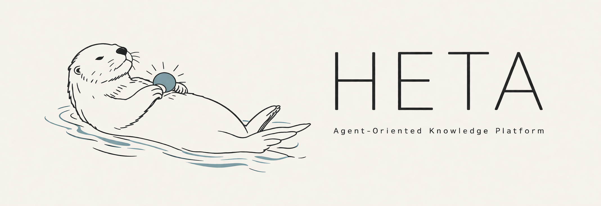

Home

面向智能体的知识管理平台
多数据库集成调度 · 双模式记忆 · 结构化知识生成
Heta 是什么？
Heta 是一个面向 AI 智能体的一体化知识基础设施，整合多种底层数据库，帮助智能体完成三件事情：外部知识获取、自身记忆积累，以及基于知识的推理与生成。
- HetaDB — 统一管理多类数据库，实现更智能的外部知识整合，无需关心知识来源于何种文件或应存储于哪种数据库。
- HetaMem — 双模式记忆：既提供基于向量检索的快速情景回忆（MemoryVG），也支持随智能体持续演化的长期知识图谱（MemoryKB）。
- HetaGen — 基于已有知识库进行归纳与扩展，生成更具价值的结构化内容。
核心功能
HetaDB
- 通过Mineru等工具进行多格式文件解析（PDF · HTML · 图片 · 表格 · Markdown · Office · 压缩包等）
- 将解析后的知识按合适的结构自动分配至不同数据库，实现统一管理，无需用户手动选择存储方式
- 提供多种查询策略以适配不同场景：
naive（向量检索）·rerank（BM25 + 向量 + 交叉编码器）·rewriter（检索增强）·multihop（多跳推理）·direct - 支持源文档溯源，帮助 agent 实现更优的 agentic search
HetaMem
- MemoryVG — 面向高频、碎片化信息的轻量记忆机制，可快速存储与检索对话内容、用户偏好、上下文事实等；支持完整 CRUD 与历史审计
- MemoryKB — 基于 LightRAG 构建的长期知识图谱，随智能体持续学习与演化；
HetaGen (早期阶段)
- 基于知识库生成结构化表格数据
- 从主题（如物理、化学、生物）出发，自动构建层次化的知识结构体系（结构树）
- 支持对生成结果执行 Text-to-SQL 查询
MCP 集成
HetaDB 和 HetaMem 提供可选的 MCP 服务器（端口 8012 / 8011），可直接集成 Claude Desktop、Cursor 等 MCP 兼容客户端。
快速入口
- Docker Compose 快速开始 — 推荐，一条命令启动全套服务
- 手动安装 — 独立运行各模块
- 连接 MCP 客户端 — Claude Desktop、Cursor
- REST API 参考